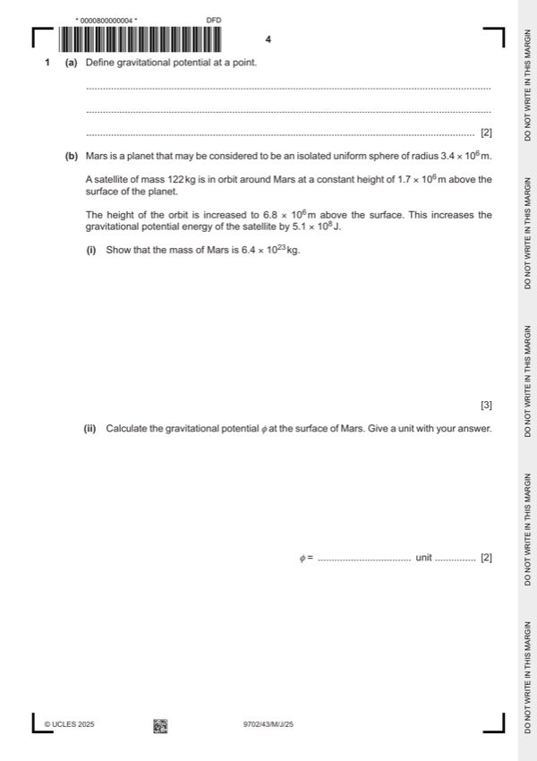

Question 1

Original paper page 4
Part 1(a) — solution
- [B1] Obtain/use: work done per unit mass
- [B1] Obtain/use: work (done in) moving mass from infinity (to the point)
Mark points
- [B1] Obtain/use: work done per unit mass
- [B1] Obtain/use: work (done in) moving mass from infinity (to the point)
Part 1(b)(i) — solution
- [A1] Obtain/use: 6.67 × 10–11 × M × 122 × [(5.1 × 106)–1 – (10.2 × 106)–1] = 5.1 × 108
Mark points
- [A1] Obtain/use: 6.67 × 10–11 × M × 122 × [(5.1 × 106)–1 – (10.2 × 106)–1] = 5.1 × 108
Part 1(b)(ii) — solution
- [A1] Obtain/use: = –1.3 × 107 J kg–1
Mark points
- [A1] Obtain/use: = –1.3 × 107 J kg–1
Part 1(c)(i) — solution
- [B1] Obtain/use: Mars takes (just under) 25 hours to rotate once on its axis
Mark points
- [B1] Obtain/use: Mars takes (just under) 25 hours to rotate once on its axis
Part 1(c)(ii) — solution
- [B1] Obtain/use: orbit is equatorial
Mark points
- [B1] Obtain/use: orbit is equatorial
Part 1 — solution
mark for any two points, 2 marks for all three points.
Mark points
- Include the ideas shown in the solution above.